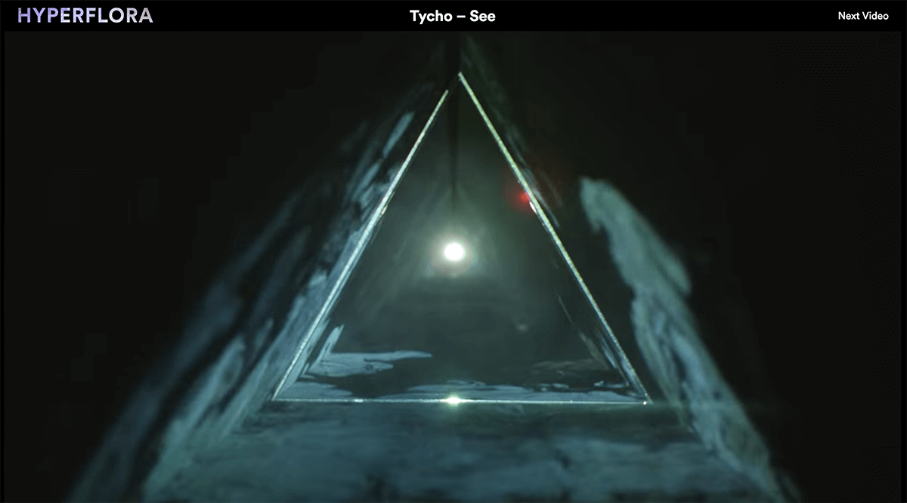
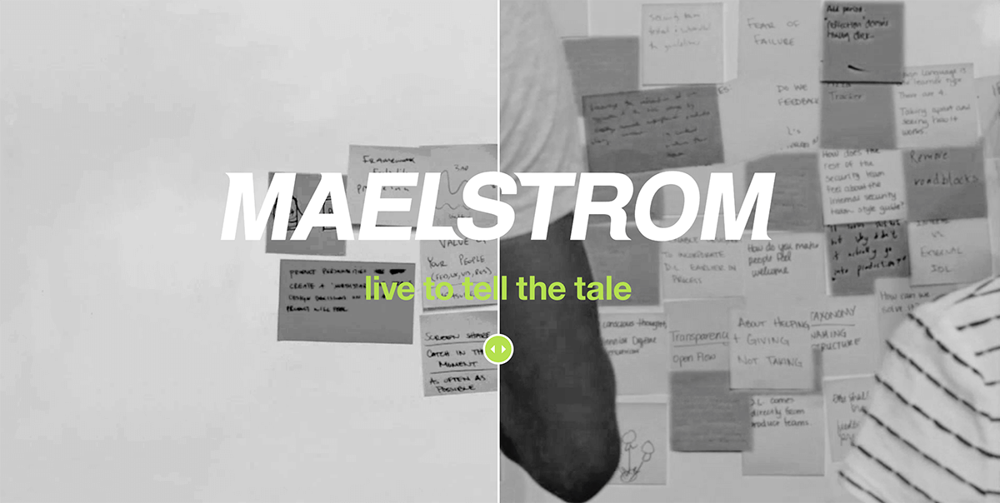
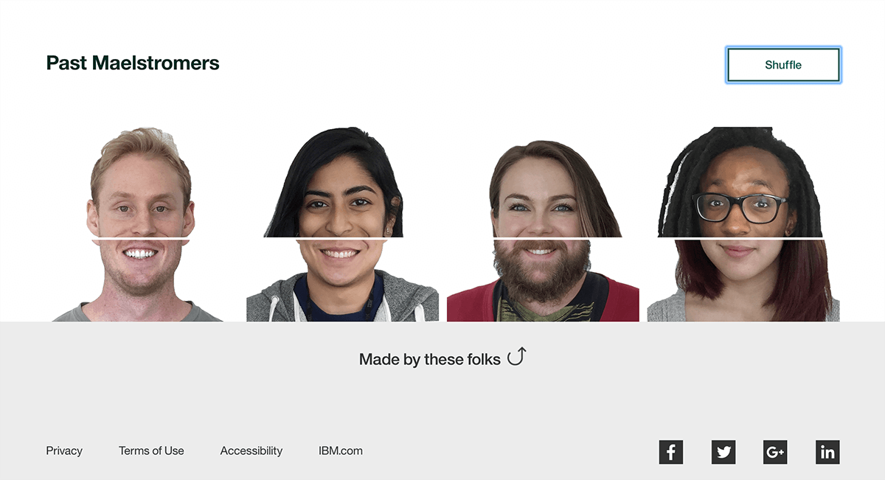
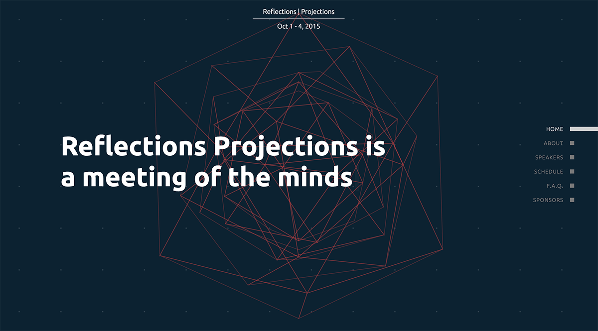
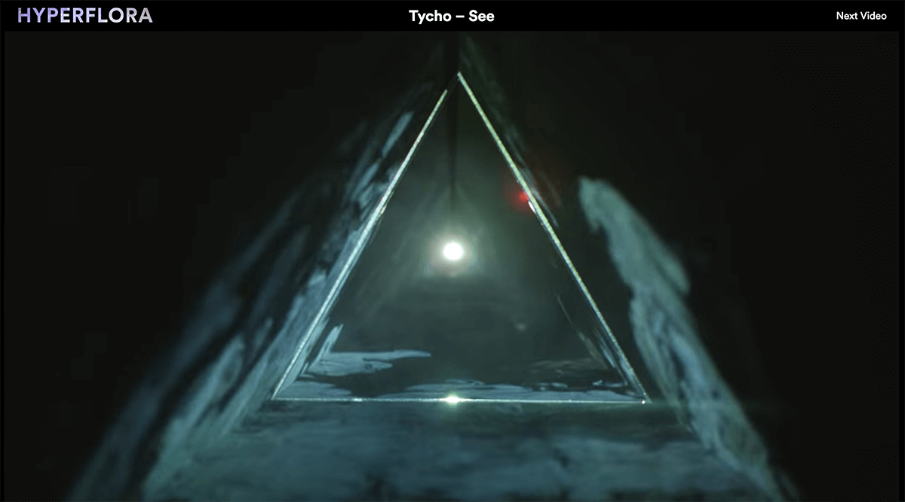
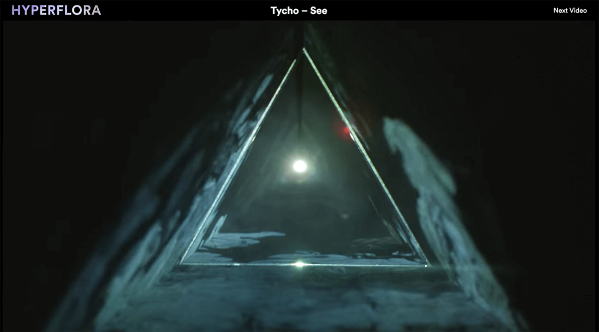

Hello! I am a developer with a passion for web development, virtual
reality, and game design. I'm currently looking for career
opportunities in these and related areas.
At the University of Illinois I was the lead web developer for
HackIllinois,
our premier hackathon, and
Reflections | Projections, our annual student-run tech conference.
Non-Euclidean Spaces
How do humans cognitively process non-standard geometries? Our team
helped psychologists at the University of Illinois explore this
question by building a simulation of hyperbolic geometry in VR. This
began as a class project, and was voted the best of more than thirty
VR projects.
With VR we have the ability to experience new environments in a way
that was previously impossible. Using an HTC Vive, users can fly
around several different types of geometric spaces, and experience
the curvature of hyperbolic and spherical geometries. We developed a
test plan to measure how accurately subjects can navigate these
non-intuitive environments.
Try out the 360 video below!
Hyperflora
Hyperflora is a
never-ending video experience inspired by
Adult Swim’s Off the Air. Viewers can choose from several
curated channels with a specific theme like animation, music, or food.
I built this site to gain familiarity with popular web technologies like
Node.js and
MongoDB. It was
made in collaboration with
Lisa Vuong.

IBM Design | Maelstrom
During my senior year, I interned at
IBM Design, as part of their
Maelstrom program.
For our introductory project, we were tasked with redesigning the
onboarding experience for new hires at IBM Design. We created a
website that guides new employees through every step of the process,
from receiving their offer letter to their first day of work.
We worked with the
Design Language team to research and design a system that would
encourage a culture of critique within IBM Design. The goal was to help
designers better understand and implement the tenants of the language.
To do this, we proposed a website that would allow designers to explore
and submit examples of the language as it was used in different contexts.


Reflections | Projections 2015
During my junior year, I served as web chair for our student-run
tech conference,
Reflections | Projections. This yearly event, hosted by the local
chapter of the ACM
since 1995, features tech talks from leaders in the industry and academia,
together with career fairs and workshops. Recently, the conference was
expanded to include an AI programming competition, a puzzle challenge,
and even an escape room!
With a small team of developers, I designed and built the
2015 conference website. This was my first experience leading a
team of developers.

HackIllinois 2015
HackIllinois, started in 2014, is an annual, student-run, 36 hour
event where college students from across the country create technical
projects ranging from websites and mobile apps to Wi-Fi connected
microwaves.
I was lead web developer for the event in 2015. Our theme that year
was arctic exploration, and
our website
encouraged visitors to “find their inner explorer.” Can you spot the
hidden fish?
The following year, I built the signup page for the conference, which
featured a small game that visitors could play before registering.
 
